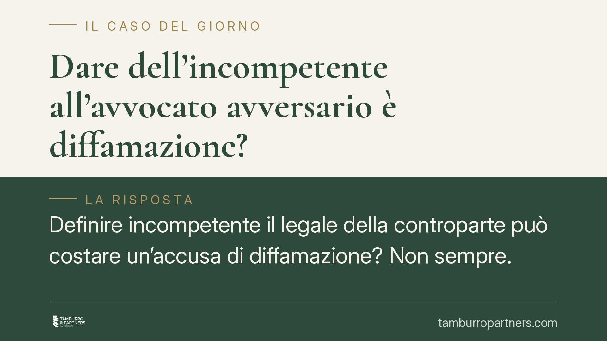

Dare dell'"incompetente" all'avvocato avversario è diffamazione?
Definire "incompetente" il legale della controparte può costare un'accusa di diffamazione? Non sempre. La giurisprudenza distingue la critica all'operato professionale — tutelata dal diritto di manifestazione del pensiero — dall'attacco gratuito alla persona. Il confine è sottile e passa dalla continenza delle espressioni e dal rispetto dei fatti. Vediamo i criteri che decidono la responsabilità penale.

Il caso
In un contenzioso condominiale accade spesso che le valutazioni sull'attività del legale avversario diventino aspre. Un condomino aveva messo in discussione la professionalità dell'avvocato del condominio, prima in assemblea e poi con una lettera. L'avvocato lamentava la lesione della propria reputazione. La questione è nota e ricorrente nella giurisprudenza penale: la critica alla competenza altrui integra il reato di diffamazione oppure resta nei confini della libera manifestazione del pensiero?
Inquadramento normativo
La diffamazione è punita dall'art. 595 del codice penale: commette il reato chi, comunicando con più persone, offende la reputazione di qualcuno assente. Due sono quindi gli elementi da verificare: l'offesa alla reputazione e la comunicazione con una pluralità di destinatari.
A questo si contrappone la scriminante del diritto di critica, che trova fondamento nell'art. 21 della Costituzione (libertà di manifestazione del pensiero) e opera, sul piano penale, attraverso l'art. 51 del codice penale, il quale esclude la punibilità quando il fatto è commesso nell'esercizio di un diritto. La critica, per essere legittima, deve rispettare tre requisiti consolidati: l'interesse alla comunicazione, la verità del fatto posto a base del giudizio (anche solo nel suo nucleo essenziale) e la continenza, cioè la misura espressiva, che non deve trascendere nell'insulto gratuito.
Va ricordato anche l'art. 596 del codice penale, che disciplina la cosiddetta prova liberatoria: in alcuni casi chi è accusato di diffamazione può dimostrare la verità dei fatti attribuiti. Il rapporto tra critica e verità è decisivo: la valutazione critica resta lecita se poggia su una base fattuale reale, non su circostanze inventate.
La distinzione che conta: critica all'operato o offesa alla persona
Il punto decisivo è distinguere due piani che spesso si confondono.
Un conto è criticare l'operato professionale: sostenere che una difesa sia stata condotta male, che una strategia sia stata inopportuna, che un atto contenesse errori. Questa è valutazione di un'attività, legittima se argomentata e contenuta nei toni.
Altro conto è aggredire la persona: attribuire disonestà, qualità morali negative, difetti gratuiti slegati da un fatto concreto. Qui si esce dalla critica ed entra l'offesa, non coperta dalla scriminante.
L'aggettivo "incompetente", di per sé, non basta a qualificare il fatto come reato: dipende dal contesto, dall'argomentazione che lo accompagna e dalla misura complessiva delle espressioni.
Assemblea e lettera: due profili distinti
I due episodi vanno tenuti separati perché toccano elementi diversi del reato.
L'assemblea condominiale è, per sua natura, un contesto con pluralità di persone: il requisito della comunicazione con più destinatari è normalmente soddisfatto. L'eventuale esclusione della responsabilità, in questa sede, non dipende dall'assenza di pubblico, ma dall'operare della scriminante del diritto di critica: se le espressioni restano contenute e ancorate a fatti, la condotta è lecita nonostante la platea.
La lettera, invece, pone un problema diverso: occorre verificare a chi sia effettivamente diretta. Se indirizzata a una sola persona — l'avvocato stesso — manca la pluralità di destinatari e il reato non si configura già per difetto di un elemento costitutivo, a prescindere dalla continenza. I due piani — scriminante e pluralità — non vanno quindi sovrapposti.
Una precisazione: l'ipotesi in esame non ricade nell'art. 598 del codice penale, che riguarda le offese contenute in scritti e discorsi pronunciati davanti all'autorità giudiziaria. Qui siamo in un contesto assembleare e privato, non processuale.
Implicazioni pratiche
Per chi partecipa a una lite — condominiale o di altra natura — il messaggio è chiaro. Esprimere giudizi sulla professionalità altrui è possibile, ma il modo conta quanto il contenuto. Un'affermazione documentata e misurata difficilmente è perseguibile; un attacco personale gratuito lo è, anche se formulato con un solo aggettivo.
Per il professionista che si ritiene leso, viceversa, non ogni critica aspra è azionabile: serve dimostrare il superamento del limite della continenza o la falsità della base fattuale.
Cosa fare in concreto
- Distingui sempre la critica all'operato dall'offesa alla persona: commenta i fatti e le scelte, non le qualità morali.
- Verifica i fatti prima di esprimere un giudizio: una valutazione negativa deve poggiare su circostanze reali e dimostrabili.
- Controlla i destinatari di qualsiasi comunicazione scritta: l'invio a una sola persona ha conseguenze diverse dalla diffusione a più soggetti.
- Modera il tono: evita epiteti gratuiti e generalizzazioni; la misura delle parole è un elemento valutato dai giudici.
- Conserva le prove: lettere, verbali assembleari e messaggi documentano sia il contenuto sia il contesto, elementi decisivi in giudizio.
Data la sottigliezza del confine, ogni valutazione va calata sul caso concreto e sulle circostanze specifiche.
---
Contributo informativo a cura di Tamburro & Partners Avvocati. Non costituisce parere legale.
Ogni condominio ha una storia a sé.
Se gestisci un'amministrazione e vuoi un confronto su una specifica questione condominiale, scrivi allo studio. Ti rispondiamo entro un giorno lavorativo.